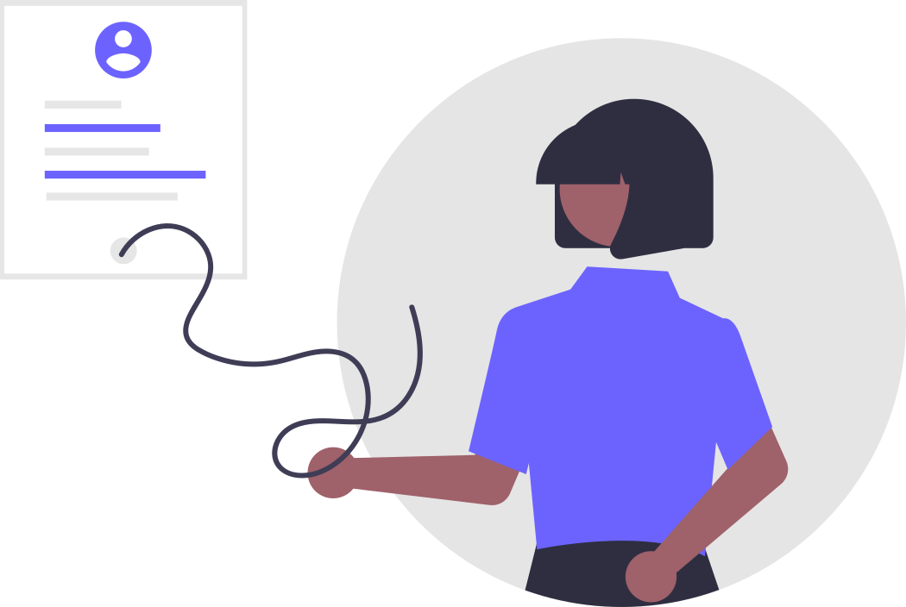

保護者の方へ
お子さまの上京準備で確認したい費用、食事、生活環境、管理体制、入寮までの流れを、保護者の判断に必要な順番でまとめました。詳細条件や最新の日程は募集資料でご確認ください。
はじめに
家族で先にそろえたい確認ポイント
住まい選びでは、費用、生活リズム、見学で聞くことの順に整理すると、候補の比較や相談内容をまとめやすくなります。青雲寮の公開情報も、その流れで確認できるように整理しています。
- 費用月額だけでなく、入寮時や更新時に必要な費用もまとめて見る
- 生活食事、個室、学習環境が本人に合うかを先に確認する
- 相談見学前に家族で聞きたいことを整理しておく
 対象条件
対象条件
富山県出身の男子学生が対象です
首都圏の大学または大学院に昼間通学する入学見込み者、または在籍者が対象です。大学院生や省庁大学校も含みます。
生活
食事付き・個室・学習環境がそろっています
朝夕2食、全60室の個室、自習室、各室のWi-Fi・有線LAN、大浴場があり、上京直後でも生活の立ち上げを進めやすい寮です。
入寮フロー
募集資料で最新の日程と必要書類を確認する
選考の回数や実施時期は募集案内によって変わります。応募前に、募集資料・願書ページで最新の日程、必要書類、手続き方法を確認してください。
相談
保護者だけでも見学・相談できます
保護者からの見学予約や相談にも対応しています。急ぎは電話が最も早く、通常はお問い合わせフォームからも受け付けています。
Cost Snapshot
見る順番は「月額」「初期費用」「更新時」
費用の検討では、毎月かかる分と、入寮時・更新時にまとまって必要な分を分けて見ると判断しやすくなります。

年度により改訂される場合があります。最新の金額・必要書類は募集資料・願書ページとPDF原本でご確認ください。
Daily Life
生活の土台になるのは食事と個室環境
上京直後に負担が大きくなりやすい食事と住環境を、寮内で整えやすい構成です。
- 朝夕2食で生活リズムを作りやすい
- 個室、自習室、ネット環境を使い分けられる
- 洗濯や入浴も寮内で完結しやすい

食事
朝夕2食で生活の土台を作りやすい
朝食は6:30〜9:00、夕食は18:30〜21:00です。日曜・祝日は休業ですが、日々の食事を確保しやすい環境です。
居室
全室個室で落ち着ける環境です
全60室、8.5㎡（約4.5畳）の個室にベッド、机、椅子、エアコン、クローゼット、内線電話を備え、各室でWi-Fi・有線LANを利用できます。
学習環境
自習室とネット環境があります
1階と3階に自習室があり、各室でもWi-Fiと有線LANを利用できます。部屋と共用スペースを使い分けやすい構成です。
入浴・洗濯
夜間の入浴と24時間の洗濯利用に対応
大浴場は夜間に利用でき、時間外は有料シャワーを使えます。洗濯設備は24時間利用でき、帰宅時間に合わせて調整しやすい構成です。
Safety
安心で安全な寮運営
管理体制や入館ルールを先に把握しておくと、見学時にはより細かな運用確認に時間を使えます。
- 寮長住み込みによる24時間対応
- 寮内外の監視カメラの設置
- 夜間入館や来客はルールに沿って運用される
管理体制
寮長による24時間対応
寮長が住み込みで常駐。体調不良時など安全面を重視して検討したい保護者の方にもおすすめです。
防犯対策
監視カメラによる安心
監視カメラが寮の内外を24時間監視。寮生の安全安心を守っています。
生活ルール
夜間入館や来客はルールの中で運用されています
22時以降はオートロックがかかり、解除して入館する運用です。来客や宿泊は事前連絡が必要で、保護者用の部屋も案内されています。
Commute
アクセスと大学別の距離感を先に確認する
生活環境だけでなく、駅からの動線や通学時間のイメージが合うかも、保護者目線では大きな判断材料になります。
- 駅からの徒歩導線を確認する
- 志望校ごとの移動時間を比べる
- 費用比較ページもあわせて見る
アクセス
京王線 東府中駅から徒歩約10分です
アクセスページでは、東府中駅からの行き方、周辺環境、見学時の来訪方法を確認できます。見学は事前予約制です。
交通アクセスを見る
大学別
大学ごとの通学ガイドがあります
志望校や進学先が決まっている場合は、大学別通学ガイドで所要時間やルートのイメージを確認できます。
大学別通学ガイドを見る
比較
一人暮らしとの費用比較もできます
家賃だけでなく、食費・光熱費・ネット代まで含めた比較をしたい場合は、費用比較ページもあわせてご利用ください。
費用比較を見る
1
応募資格を確認する
富山県出身の男子学生で、首都圏の大学または大学院に昼間通学する入学見込み者、または在籍者が対象です。
2
選考要項・日程PDFを確認する
募集資料に記載された各選考回のうち、どの回で応募するかを決めます。受付期間、選考日、会場はPDF原本で確認してください。
3
必要書類を準備する
入寮願書・面接資料、調査書または成績証明書、返信用封筒2通を用意します。選考手数料3,000円も必要です。
4
書類を郵送し、選考日に面接を受ける
書類と選考手数料は現金書留で郵送します。面接は各選考日の午前9時30分から高志会館で実施します。
5
結果を確認し、入寮手続きを進める
結果は選考日当日の午後6時にこのページで発表します。合格後は通知内容に沿って保護者会や入寮手続きを進めます。
後期合格・追加合格の方へ
追加募集や後期合格後の案内は、空室状況や募集状況によって変わる場合があります。住まいを急いで探している場合は、後期合格向けページとお問い合わせをご利用ください。
Contact
問い合わせ前に整理するとやり取りが短く済みます
急ぎの確認は電話、落ち着いて整理したい相談はフォームと使い分けるとスムーズです。
- 電話は急ぎの相談や日程調整向き
- フォームは比較中の疑問をまとめて送れる
- 保護者だけの見学相談にも対応している

急ぎの相談
急ぎの場合は電話が最も早く、平日9時から17時に対応しています。見学日程の調整や住まい相談も電話で進めやすくなります。
見学予約で伝えるとスムーズな内容
- 学年、高校生か大学生か
- 進学先または志望校
- 入寮を希望する時期
- 見学希望日程、相談したい内容
入寮できるのはどのような人ですか？
富山県出身の男子学生で、首都圏の大学または大学院に昼間通学する入学見込み者、または在籍者が対象です。省庁大学校なども含みます。
募集は年に何回ありますか？
募集は複数回案内されることがありますが、実施回数や時期は募集案内によって変わります。最新の情報は募集資料・願書ページでご確認ください。
後期合格や追加合格でも相談できますか？
できます。追加募集や後期合格後の受け入れは空室状況や募集状況によって案内が変わる場合がありますが、住まい相談は電話またはお問い合わせフォームから受け付けています。
見学はできますか？
はい。電話またはお問い合わせフォームで事前予約のうえ見学できます。保護者だけの見学相談にも対応しています。
保護者だけでも相談できますか？
はい。費用、安全面、生活リズム、通学のしやすさなど、保護者目線での確認事項について個別相談できます。
費用は毎月どのくらいかかりますか？
月額目安は約51,000円です。内訳は、寮費30,000円、食費約16,000円、月額約5,000円（新聞、インターネット接続料、及び自室の電気料金等）の負担金です。入寮時・更新時には入寮費5万円が必要です。
更新時にも費用はかかりますか？
更新時にも入寮費5万円がかかります。詳しい納付時期は最新の案内で確認してください。
特待生制度はありますか？
あります。新入寮生のうち、学業成績が優秀で経済的理由により修学が困難な方を対象に、入寮費5万円と1年目寮費の半額18万円、合計23万円を免除する制度があります。通常費用を納入した後、認定後に返金されます。
食事の時間は決まっていますか？
朝食は6:30〜9:00、夕食は18:30〜21:00です。日曜・祝日は休業です。
夕食の取り置きはできますか？
できます。事前に取り置き用の札へ名前を書いておくと、最大10人まで時間外に夕食を受け取れる運用があります。
欠食や外泊のときに食費の調整はありますか？
欠食届を出している場合は、その日の食費が減免されます。外泊届は提出必須ではありませんが、食費減免の対象になる場合があります。
部屋は個室ですか？ インターネットは使えますか？
はい。全60室の個室（8.5㎡／約4.5畳）で、ベッド、机、椅子、エアコン、クローゼット、内線電話を備え、各室でWi-Fiと有線LANを利用できます。
入浴や洗濯の設備はありますか？
大浴場があり、時間外は有料シャワーも利用できます。洗濯機は6台、乾燥機は4台で、洗濯設備は24時間利用できます。
22時以降の出入りはできますか？
できます。22時以降はオートロックがかかるため、解除して入館する運用です。
来客や宿泊のルールはありますか？
保護者、友人ともに事前連絡が必要です。保護者用の部屋も案内されており、友人は本人の部屋で宿泊できる運用があります。
セキュリティや管理体制はどうなっていますか？
FAQでは24時間管理、寮の外と中の監視カメラ、緊急時の寮長対応が案内されています。見学時には夜間や休日の運用も確認すると安心です。
合格発表はどのように確認しますか？
結果の確認方法や通知の流れは、募集資料や選考時の案内で確認してください。ホームページ掲載と通知発送の両方で案内される場合があります。
合格後に保護者向けの説明はありますか？
あります。保護者向けの説明や提出物の案内が行われます。実施形式や時期は最新の案内で確認してください。
電話とフォームはどちらが早いですか？
急ぎの場合は電話が最も早く、平日9時から17時に対応しています。フォームは24時間受付ですが、返信は営業時間内に順次行われます。
体調不良時や災害時の細かな対応フローは公開されていますか？
公開ページでは詳細な保護者連絡基準や医療同行の流れまでは明示していません。見学や個別相談の際に、体調不良時の初動、防災時の連絡方法、保護者への共有タイミングをご確認ください。
ページ内のイラストは unDraw のライセンス範囲で利用しています。